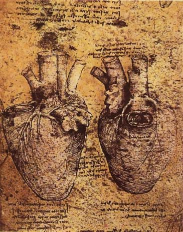

how to open your heart
ハートを開く
毎日が灰色で、人に近づかれると身を引いてしまう。心を開くとは何かを、閉じた理由を見つめる4つの流れと鏡・体の練習からたどります。ルイーズ・ヘイが広めた鏡の方法、心理学者クリスティン・ネフによるセルフ・コンパッションの3要素、心のチャクラや胸襟を開くという言葉にも触れます。

毎日を過ごしているのに、色が薄い。人との関係にも見えない境目があり、近づかれると少し身を引いてしまう――そんなとき、心を開くという言葉が気にかかることがあります。
その感覚を心が閉じている状態として語ることがあります。けれど、開くことは無理に何かを壊す作業ではない、ともされています。閉じた理由を見つめ、いまの自分に向けるまなざしを少し変えていく。その流れを、心を開くための考え方と練習からたどります。
心を開くとは、閉じていることに気づくこと
心を開くことは、突然できるようになるものではなく、ひとつの技能として説明されています。長いあいだ自分を守るように過ごしていると、閉じている状態そのものが日常になり、開き方が見えにくくなることがあるためです。
「多くの人は、あまりに長く心を閉じて生きてきたので、閉じていることが習慣になり、開き方が分からなくなっている」
「自覚がなくても、生活のなかに探せるしるしがあります。ひとつは、人生が灰色に見えること。機械のように、一日、また一日。人生への情熱がない。心は愛の中心なので、心を閉じることは、情熱と愛を断ち切ることとして現れる」
「もうひとつは、人を寄せつけないこと。恋愛をしていても、付き合っていても、相手がどこまで近づけるかに、いつも限度がある。それ以上、親密にはさせない」
人生が灰色に見えることと、人に近づかせないこと。この二つは、外からは別々の悩みに見えるかもしれません。しかしこの説明では、どちらも心を閉ざすことから現れる姿として置かれています。
なぜ閉じたのかをたどる
なぜ閉じたのかという問いには、傷や喪失が関わるとされています。ここで言う傷は、ひとつの出来事だけに限られません。
「理由はいくつもありますが、ひとつは子ども時代の傷。性的な虐待や、子ども時代のどんな傷も、心を閉じさせることがある。この人生の傷とは限りません。前の人生から持ち越した刻印で、すでに少し閉じた心で生まれてくることもある。もうひとつは喪失。愛する人を失うこと。関係を失うこと。恋愛での失望。喪失は、心を閉じることと深く関わっています」
この見方では、閉じた状態は弱さや失敗として扱われません。痛みや別れのなかで生まれた、自分を守ろうとする反応として語られています。
心を開くために言われている4つの流れ
開くための道筋は、まず過去を責めずに見つめることから始まります。練習だけを急ぐ前に、何が心を閉じる方向へ向かわせたのかを知ることが置かれています。
まず、人生を振り返る。過去に何があって、心を閉じることになったのか。気づくことが、最初で、いちばん大事な一歩だとされます。
2．ブロックを支えている信念に気づく
「気づくと、もうひとつ、それを支えている無意識の信念が見えてきます。こういう形の信念です。『心を閉じておけば、痛みと喪失から自分を守れる』。これがあまりに深く刻まれていて、気づかないまま、ブロックを固定している。そして、それに気づいた瞬間、それがどれほどの嘘かが分かる。心を閉じても、痛みからも喪失からも、守られはしない。幻想です。その信念をさらしはじめると、少し、楽に息ができるようになる」
3．選ぶ
「ブロックと、それを支える型が見えたら、選択があります。閉じたままにするか、開くか。宇宙はいつも、開くことへ招いていて、その招きに裁きはない。心が閉じているなら、人生は毎日ささやきます。『今日は心を開きますか。それとも、閉じたままにしますか』」
4．練習する
「はい、開きたい、と選んだなら、簡単な練習があります」
ここで中心になるのは、閉じていることを責めることではなく、気づくこと、信念を見ること、そして開く方を選ぶことです。心を開くとは、力を込めてこじ開けることより、閉じたままでいる理由を少しずつ見出していくこととして描かれています。
心を開くための鏡と体の練習
選ぶという段階のあとには、日常のなかで行う三つの練習が続きます。どれも、自分の内側や体に注意を向ける、静かな内容です。
・鏡 — 毎日、鏡を見て、目の奥を見て、「愛している」と言う。「自分への愛を先に感じなければ、他の誰にも心を開けません」
・心に注意を向ける — 「生活が少し狂って、心が一時的に閉じかけていると感じたら、目を閉じても開けたままでもいい、ただ心の中心に注意を向ける。それだけの、とても簡単な練習です」
・体に礼を言う瞑想 — 鏡が少し難しい人に向けた形も紹介されています。座って目を閉じ、脚と足に触れて、愛している、人生のなかで運んでくれてありがとう、と伝える。胸に触れて、毎日打って体を生かしてくれてありがとう、と伝える。それから魂に、別の意味でこの体を生かしてくれてありがとう、と伝える。体のあちこちに触れて、礼を言い続ける。いまこの瞬間、この体に生まれていることへの、自分への愛を育てる練習だ、と説明されます。
鏡に向かって『愛している』と言う練習も、体に礼を言う時間も、自分に優しくすることへ向かうものとして説明されています。自分を遠くから評価するのでなく、いまここにいる自分を見て、言葉を渡すための形です。
鏡に向かって言う練習の来歴
鏡に向かって言うという方法は、ルイーズ・ヘイが広めた練習として知られています。鏡に向かって、自分の目を見て、愛していると言うという方法と、自分への愛を先にという考え方は、彼女の活動と結びついています。
アメリカの著述家で、1984年の『You Can Heal Your Life（ライフ・ヒーリング）』で知られ、出版社ヘイ・ハウスを作った人です。
本人がニューヨーク・タイムズに語ったところでは、ロサンゼルスの貧しい母のもとに生まれ、母の再婚相手に暴力を受け、5歳ごろに隣人に強姦され、15歳で高校を中退し、16歳の誕生日に生まれた娘を養子に出した。のちにモデルとして成功し、14年の結婚が夫の裏切りで終わる。そのころ「宗教科学」の教会に出会い、ニューソートの「思考の力」を学び、1970年代には人々を導いて声に出す肯定の言葉（アファメーション）を唱えさせるようになりました。
「鏡に向かって、自分の目を見て、愛していると言う」は、ヘイが広めた練習です。「自分への愛を先に」という言い方も、ヘイから来ています。
ヘイには「病気の原因は思考にある」という主張もあり、医学の側から批判があります。一方で、鏡に向かって愛していると言う練習は、病気を扱うものとしてではなく、自分を見て認める行為として読むことができます。
自分に優しくすることを心理学はどう見るか
心理学では、自分に優しくすることを自分への思いやり（セルフ・コンパッション）として研究してきました。アメリカの心理学者クリスティン・ネフは、この考え方を三つの要素で定義しています。
・自分への優しさ — 痛みや欠点に出会ったとき、無視したり、自己批判で自分を傷つけたりするのではなく、自分に温かくあること
・共通の人間性 — 苦しみと失敗は、自分だけが孤立して抱えるものではなく、人間に共通の経験の一部だと認めること
・マインドフルネス — 否定的な感情を、抑えも誇張もせず、釣り合いのとれた形で観ること
これは自己憐憫とは違う、とされています。自己憐憫は、自分を被害者と見なし、対処する自信と力を欠いた状態。自分への思いやりは、そうではない。
研究では、自分への思いやりのある人は、そうでない人より心理的な健康が高い。人生の満足、幸福、楽観、好奇心、人とのつながり、責任感、感情の回復力と正の関係があり、自己批判、抑うつ、不安、反すう、完璧主義、摂食の問題と負の関係がある、とされています。
鏡の前で自分に言葉をかけることは、自分への優しさと重ねて捉えられます。体に注意を向けて礼を言う時間は、いまの感覚を見つめるマインドフルネスに近い形です。また、傷や喪失を誰にでも起きることとして見つめる視点には、共通の人間性という要素も見えてきます。
心のチャクラと、心を開くという言い方
心を開く、心を閉ざすという言葉は、日本にも以前からあります。胸襟（きょうきん）を開くは、胸もとを開くように隠しごとをせず、思いを打ち明けることを表す言葉です。
心のチャクラと呼ばれるものも、日本では胸のうちや腹のうちのように、体を通した言葉で語られてきました。心を開くとは、胸のうちをすべてさらすことではなく、閉じてきた場所があると知り、その場所に自分で触れていくこととして考えられます。
心を閉ざす感覚と近いテーマ
- 受け取れない — 鎧の話。心を閉じることの、もうひとつの形。別のページで扱っています
- オーラ — 感情体と、心を閉じるとしびれる、という説明。別のページで扱っています
- インナーチャイルド — 子ども時代の傷が心を閉じさせる、という考え方。別のページで扱っています
- 波動を上げる — 高い感情を育てるための心の作業。別のページで扱っています
- 自分への思いやり — 上に書いた、心理学の側の名前です
出典・参考
- Christina Lopes, How To Open Your Heart TODAY In 4 Powerful Steps（YouTube）閉じているしるし、閉じた理由、心のブロックを支えている信念、四つの手順、三つの練習。引用は自動生成の字幕による
- Louise Hay（英語版ウィキペディア）「鏡に向かって言う」練習を広めた著者の来歴（1926〜2017）
- Self-compassion（英語版ウィキペディア）クリスティン・ネフの「自分への思いやり」の三つの要素と、研究で分かっていること
関連することば
 astral projection / out-of-body experienceアストラルトラベル眠り際に体が動かず、天井近くから自分を見た気がした。幽体離脱とは何かを、この分野の実践者の言葉、神経科学者・心理学者による体外離脱の説明、研究者ディーン・シールズの文化研究を引きながら整理します。戻れない不安、眠りや金縛りとの関係、5段階の方法と注意点、生霊・あくがるも解説します。
astral projection / out-of-body experienceアストラルトラベル眠り際に体が動かず、天井近くから自分を見た気がした。幽体離脱とは何かを、この分野の実践者の言葉、神経科学者・心理学者による体外離脱の説明、研究者ディーン・シールズの文化研究を引きながら整理します。戻れない不安、眠りや金縛りとの関係、5段階の方法と注意点、生霊・あくがるも解説します。 ascension / 5Dアセンション疲れが抜けず、動悸や人間関係の変化が気になる。アセンション症状とは何かを、解説動画の語り手が挙げる六つ・31の変化、並木良和や考古天文学者アンソニー・アヴェニの言葉、精神医学の見方とともにたどり、5次元や地球変容の語りの来歴、受診が必要な症状との線引きを整理します。
ascension / 5Dアセンション疲れが抜けず、動悸や人間関係の変化が気になる。アセンション症状とは何かを、解説動画の語り手が挙げる六つ・31の変化、並木良和や考古天文学者アンソニー・アヴェニの言葉、精神医学の見方とともにたどり、5次元や地球変容の語りの来歴、受診が必要な症状との線引きを整理します。 ascendant / rising signアセンダント自分の星座より、周囲から受け取られる印象のほうがしっくりくる。アセンダント（上昇宮）とは、生まれた瞬間に東の地平線にあった星座で、第一印象や世界との接点としてどう捉えられるのかを解説します。CHANIとウィキペディアの説明を引き、太陽・月との違い、出生時刻と出生地が必要な理由、ビッグスリーでの位置づけを紹介します。
ascendant / rising signアセンダント自分の星座より、周囲から受け取られる印象のほうがしっくりくる。アセンダント（上昇宮）とは、生まれた瞬間に東の地平線にあった星座で、第一印象や世界との接点としてどう捉えられるのかを解説します。CHANIとウィキペディアの説明を引き、太陽・月との違い、出生時刻と出生地が必要な理由、ビッグスリーでの位置づけを紹介します。 affirmationsアファメーション「私は豊かだ」「私は愛されている」と毎朝唱えている。でも、唱えるたびに、嘘をついている気がする。効いているのか、逆効果なのか。この分野で「これを先に身につけないと効かない」と言われている一つのこつと、38の言葉。この言葉の来歴（1910年、1984年）、日本語の「言霊」、そして心理学が2009年に見つけた「効く人と、逆効果になる人」の違い。
affirmationsアファメーション「私は豊かだ」「私は愛されている」と毎朝唱えている。でも、唱えるたびに、嘘をついている気がする。効いているのか、逆効果なのか。この分野で「これを先に身につけないと効かない」と言われている一つのこつと、38の言葉。この言葉の来歴（1910年、1984年）、日本語の「言霊」、そして心理学が2009年に見つけた「効く人と、逆効果になる人」の違い。 how to pray祈り方祈りたいのに、誰に何を言えばいいのか分からない。祈りを「宇宙との対等な会話」と語るこの分野の教師の言葉から、言葉の置き方や手を合わせる形をたどり、日本語版ウィキペディアの記述とコクラン総説などの研究が示す範囲を整理します。
how to pray祈り方祈りたいのに、誰に何を言えばいいのか分からない。祈りを「宇宙との対等な会話」と語るこの分野の教師の言葉から、言葉の置き方や手を合わせる形をたどり、日本語版ウィキペディアの記述とコクラン総説などの研究が示す範囲を整理します。 inner childインナーチャイルド恋愛で、相手の一言に急に黙り込んでしまう。インナーチャイルドを手がかりに、幼少期の安心感と親しい関係での反応のつながりを整理します。精神科医・相澤雅子、心理カウンセラー・衛藤信之、心理学者ニコール・ルペラらの語りを引き、向き合い方、心理療法との重なり、科学的な限界まで解説します。
inner childインナーチャイルド恋愛で、相手の一言に急に黙り込んでしまう。インナーチャイルドを手がかりに、幼少期の安心感と親しい関係での反応のつながりを整理します。精神科医・相澤雅子、心理カウンセラー・衛藤信之、心理学者ニコール・ルペラらの語りを引き、向き合い方、心理療法との重なり、科学的な限界まで解説します。